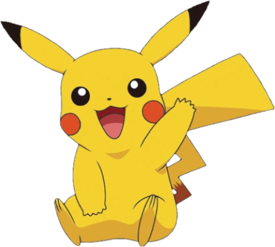
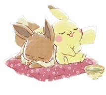

Mario
Mario Zelda
Zelda Pokemon
Pokemon Switch
Switch
寶可夢

起源
世界
動畫
本作概念起源於一種日本的鄉下兒童早年流行的娛樂方式——昆蟲收集與交換不同物種，
當創始人田尻智小的時候，他就很喜歡這類消遣，日後日本工業發展並經歷了都市化，他成年進入城市工作後，
希望能讓都市的孩子也感受到這種樂趣，便動手開發了精靈寶可夢這部作品，遊戲允許玩家捕獲，收集，培育數百隻生物，
也就是通常所說的寶可夢，而這些怪獸則是在GAME FREAK的早期小遊戲中所構思的。藉由與其他寶可夢對戰，寶可夢能夠提升等級甚至進化，
成為更強大的寶可夢，習得新的絕招。在戰鬥中寶可夢幾乎不會流血或死亡，只是會暈倒（動畫中稱為「失去戰鬥能力」）。這對田尻智來說是一個敏感話題，
因為他不想讓這個遊戲世界充滿更多「毫無意義的暴力」。任天堂為了讓這系列走出日本，在1998年將精靈寶可夢連同動畫引入了美國市場，自此開啟了海外門戶。
